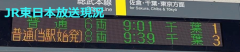
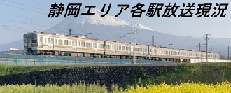

当サイト管理者がおすすめするその他サイト
ATOS放送各駅現況 |
ATOS放送の管轄内の各駅の現況を載せられています。付帯などの確認には最適かと思います。そしてJR東日本管内の発車メロディ一覧も存在します。 |
|---|---|
|  JR東日本放送各駅現況 |
JR東日本の管轄する範囲の各駅の現況を載せられています。付帯などの確認には最適かと思います。(ATOS放送以外のみ) |
|  静岡エリア各駅放送現況 |
静岡周辺各駅の現況を載せられています。付帯などの確認には最適かと思います。このサイトの「JR東日本発車ベル変遷カレンダー」はとても便利です。(主に静岡エリア) |
 補助放送wiki |
補助放送について解説されています。 |